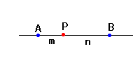
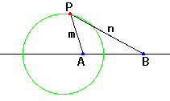

|
In the right figure,AP:BP = m:n. When the point P moves with keeping the
ratio,the locus of P is a circle. We call it the circle of Apolonius. This circle connects interior and exterior division points of A and B. |
  |
How to use this applet1.Press "+" or "-" button to change the ratio of AB and BP.2.Drag the red point. 3.Press "Zoom in" button to scale up the figure. 4.Press "Zoom out" button to scale down the figure. 5.Check "Circle" to draw the circle of Apolonius. 6.Check "Additional line" to see the visual proof. 7.Press "Init" button to go to the first step. |